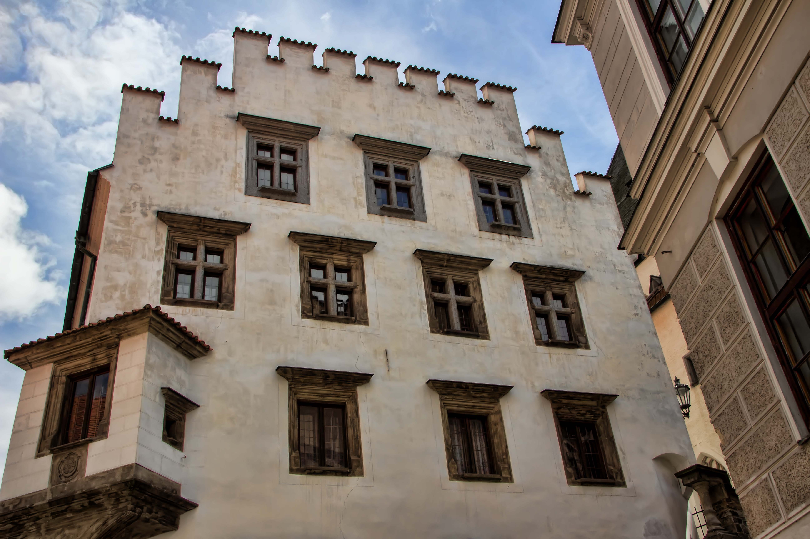

Český Krumlov
Crumlaw
(Czech: Český Krumlov, German: Krumau) is a beautiful town of 13,300 inhabitants located in Southern Bohemia in the Czech Republic. Like Prague, the town is situated on the Vltava River and is full of Baroque buildings housing cafes and bars, features a spectacular castle (the second largest in the Czech Republic), and an old-town square. The town's appearance is little changed since the 18th century and the buildings have been well maintained and restored. In 1992 Český Krumlov was added to the UNESCO World Heritage List [37]. The town is very popular among tourists, who outnumber the local population in the summer.
By bus
From Prague, and other nearby cities or towns of Bohemia, getting to Český Krumlov by public bus is easier, faster, and cheaper than by train.
LEO Express runs up to 2 fully air-conditioned buses per day between Český Krumlov and the Florenc bus station in Prague. The bus stops at Tábor, Veselí nad Lužnicí and České Budějovice. The bus also stops at the Prague main railway station so they are scheduled the way that you can directly change between bus and LEO Express train operating between Prague, Krakow, Košice, Ostrava etc.
Student Agency [38] runs up to 8 buses per day between Český Krumlov and the Na Knízecí bus station in Prague, near the Anděl metro station. A one-way journey takes around 3 hours, and costs CZK 200. The bus stops at Pisek and České Budějovice. This bus is cheaper and more comfortable than other public buses.
Upon arriving in Český Krumlov, there are two bus stops: the first is north of the castle, the second is the main terminal and is located east of the main square. Both stations are about a five to ten minute walk from the main square--from the north, walk down Latrán ulice, from the east, head westward and look for Horni ulice off the main road. Check which stop is closest to your accommodation before your trip.
By train
Czech Railways [46] operates train service to Cesky Krumlov, via České Budějovice. From Prague Hlavní Nádraží train station (Praha hl.n.), the regular fare is CZK 275 (for two or more people, group rate, "skupinová sleva", is available, second person pays CZK 210, each extra person pays CZK 138). The online discount called "Včasná jízdenka Česko" [47] gives you a price of CZK 189 to CZK 199.
Since 10th December 2017, only one direct train from Prague to Český Krumlov is operated by Czech Railways (ČD). A new train operator GW Train (GWTR) takes over all regional trains from České Budějovice to Český Krumlov. Tickets of Czech Railways (ČD) are not valid on these trains. Ticket from České Budějovice to Český Krumlov costs 40 CZK and it is possible to buy it from ticket machine on the train.
The section between Prague and České Budějovice is still operated by ČD. The train station in Český Krumlov is located north of the main square and the castle; the walk to the center is 15-20 minutes downhill. Taxis often wait in the parking lot for tired travelers - it may be worth the CZK 100 ride into town, especially at night.
- List item #1
- List item #2
- List item #3
By foot
Ambling around the town's crooked ulices is the best way to get lost in Český Krumlov's 750 years of history. Bring solid walking shoes for the uneven cobblestones.
Český Krumlov is a jumble of 750 years of architectural design, and for this reason was included in the UNESCO World Heritage List. Part of the fun is to get lost in its maze of cobbled ulices, while the Vltava River rushes along from almost every direction, adding to the confusion.
Walking the length of Latrán from Budějovická Gate to the town square, Náměstí Svornosti, up Horní and across the bridge to the Barbakán, will take about an hour if you’re interested in stopping and gawping at sites.
By bike
Many good biking paths lead you to and from Český Krumlov, but you're not encouraged to ride through the streets once you get here. Park and lock your bike and enjoy not pedaling for a while.


History

During the thousand years of its existence, the city grew from a settlement stretching from Prague Castle in the north to the fort of Vyšehrad in the south, becoming the capital of a modern European country, the Czech Republic, a member state of the European Union..

The city is traditionally one of the cultural centres of Europe, hosting many cultural events. Some of the significant cultural institutions include the National Theatre (Národní Divadlo) and the Estates Theatre (Stavovské or Tylovo or Nosticovo divadlo), where the premières of Mozart's Don Giovanni and La clemenza di Tito were held. Other major cultural institutions are the Rudolfinum which is home to the Czech Philharmonic Orchestra and the Municipal House which is home to the Prague Symphony Orchestra. The Prague State Opera (Státní opera) performs at the Smetana Theatre.

The city has many world-class museums, including the National Museum (Národní muzeum), the Museum of the Capital City of Prague, the Jewish Museum in Prague, the Alfons Mucha Museum, the African-Prague Museum, the Museum of Decorative Arts in Prague, the Náprstek Museum (Náprstkovo Muzeum), the Josef Sudek Gallery and The Josef Sudek Studio, the National Library and the National Gallery, which manages the largest collection of art in the Czech Republic. There are hundreds of concert halls, galleries, cinemas and music clubs in the city. It hosts music festivals including the Prague Spring International Music Festival, the Prague Autumn International Music Festival, the Prague International Organ Festival and the Prague International Jazz Festival. Film festivals include the Febiofest, the One World Film Festival and Echoes of the Karlovy Vary International Film Festival. The city also hosts the Prague Writers' Festival, the Prague Folklore Days, Prague Advent Choral Meeting the Summer Shakespeare Festival,[54] the Prague Fringe Festival, the World Roma Festival, as well as the hundreds of Vernissages and fashion shows.